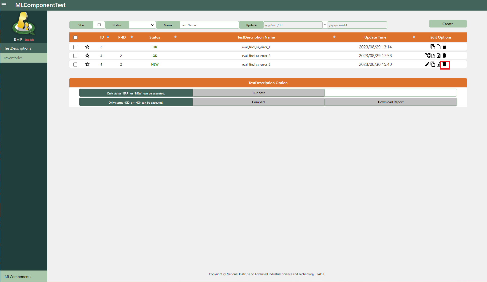
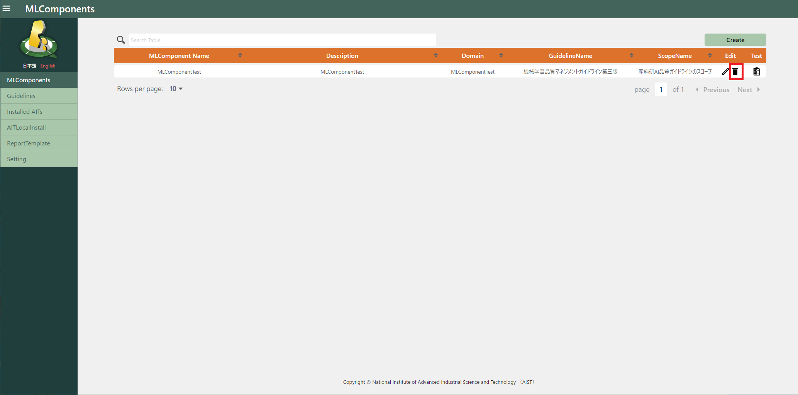

5.1. Delete¶
5.1.1. Delete TestDescriptions¶
Click the “delete” icon on the TestDescriptions list screen to delete the target.

5.1.2. Delete Inventories¶
Click the “delete” icon on the Inventories list screen to delete the target.

5.1.3. Delete MLComponents¶
Click the “delete” icon on the MLComponents list screen to delete the target.
(If TestDescription or Inventory exists in the MLComponent to be deleted, it cannot be deleted.)
5.1.4. Delete Guideline¶
Click the “delete” icon on the Guidelines list screen to delete the target.

5.1.5. Uninstall AIT¶
Click the “AIT Uninstall” button on the “Installed AIT List” screen to uninstall.
(Make sure that the target AIT is not used in all TestDescriptions.)